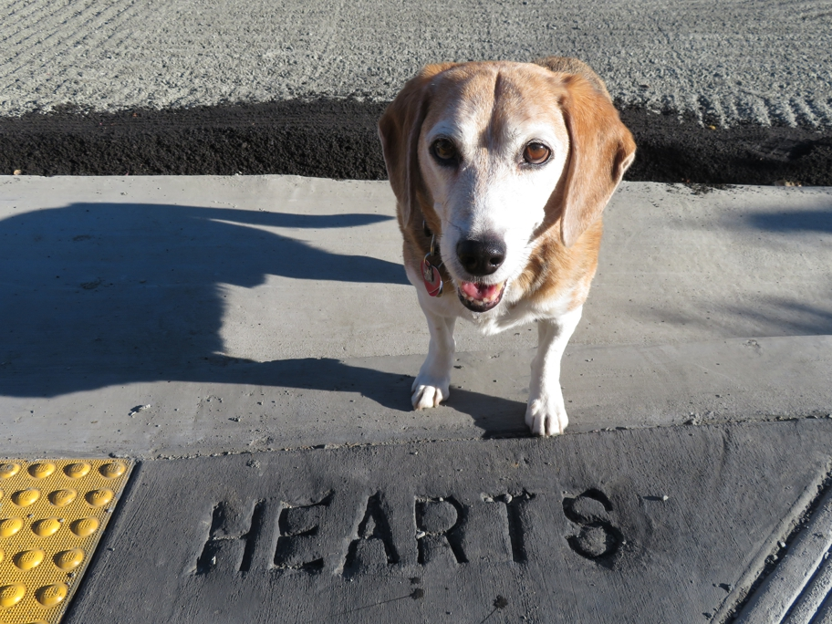

The sidewalk typo we'd come to see, on Hearst at Circular. It was, sadly, corrected a few days later. The trail of chalk hearts that we found on the way must have been a remarkable coincidence, as it was older than the concrete with the typo.
hearts Huxley Beagle sanfrancisco